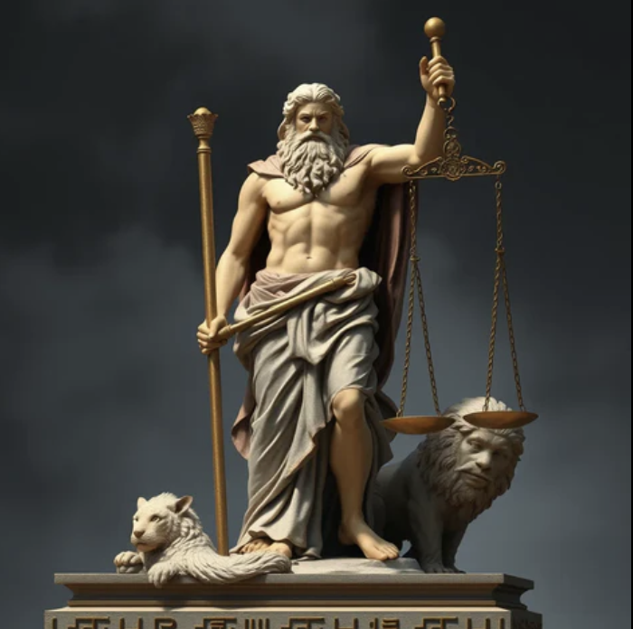

| Élément | Description |
|---|---|
| Origine | Cronos et Rhéa |
| Épouses / amantes | Héra , Métis, Mnémosyne, Léto, Sémélé, Danaé, Alcmène… |
| Enfants | Arès, Héphaïstos, Athéna, Apollon, Artémis, Dionysos, Héraclès, Hélène de Troie… |
| Attributs | Foudre, sceptre royal, trône d’or sur l’Olympe |
Après la chute de Cronos , Zeus devint le champion des dieux naissants.
Libérant ses frères et sœurs, il mena la guerre contre les Titans, assisté des Cyclopes et des Hécatonchires.
Grâce à leurs armes et à leur force, il vainquit les anciens Titans et établit le règne des dieux de l’Olympe.
De son trône céleste, Zeus règne sur le ciel, maîtrisant les orages et la foudre.
Il maintient l’ordre dans l’univers et veille à la justice parmi les hommes et les dieux.
Mais son rôle de souverain ne l’empêche pas de suivre ses désirs : nombreuses sont ses aventures avec mortelles et déesses, donnant naissance à de nombreux héros et divinités.
Zeus incarne la puissance, la protection, mais aussi la responsabilité et le jugement.
Sa foudre, symbole de sa volonté, rappelle que nul ne peut échapper à la justice divine.
Il est le roi absolu de l’Olympe, celui qui gouverne le destin des dieux et des hommes.